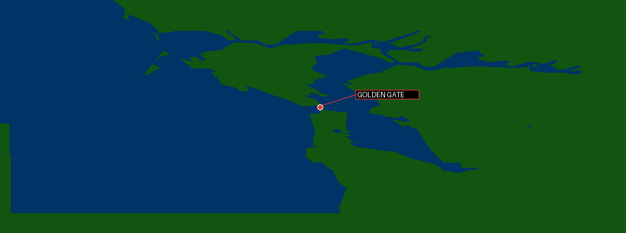

<!doctype html><meta charset="utf-8"><title>FA-18 map evidence viewer</title>
<style>body{margin:0;background:#080b10;color:#d8e1ea;font:14px monospace;display:grid;grid-template-columns:55% 45%;height:100vh}section{padding:14px;box-sizing:border-box}img,canvas{width:100%;background:#000;border:1px solid #334}small{color:#9ab}h1{font-size:17px;margin:0 0 10px}.map{position:relative}.map img{display:block}.gate{position:absolute;left:46.6%;top:42.3%;transform:translate(9px,-50%);padding:2px 4px;background:#260000;border:1px solid #d44;color:#ff9b9b;font-size:11px;white-space:nowrap;pointer-events:none}</style>
<section><h1>Traced M-map vector mosaic</h1><div class="map"><span class="gate">GOLDEN GATE</span></div><small>Direct land/sea fills and overlays. The label is anchored at the measured `$C3559A/$C355D2` red-line intersection (466, 156.5) in the 1000×370 mosaic; black remains uncaptured map area, not sea.</small></section>
<section><h1>WebGL: bounded component inspection</h1><canvas id="gl" width="900" height="700"></canvas><small>Drag to orbit; wheel to zoom. These are local component spaces, not globally placed world vertices. Proven instances: C3B6A6 (filled) and C36212 (line). The demo refresh additionally reaches the much larger `$C34A9A` face family, already independently identified as an external-flight-object candidate—not a map landmark.</small></section>
<script>
const c=document.querySelector('#gl'),g=c.getContext('webgl');let yaw=.5,pitch=.35,zoom=18000,drag;
const vs='attribute vec3 p;uniform mat4 m;void main(){gl_Position=m*vec4(p,1.);}';const fs='precision mediump float;uniform vec4 col;void main(){gl_FragColor=col;}';
function sh(t,s){let x=g.createShader(t);g.shaderSource(x,s);g.compileShader(x);return x}let pr=g.createProgram();g.attachShader(pr,sh(g.VERTEX_SHADER,vs));g.attachShader(pr,sh(g.FRAGMENT_SHADER,fs));g.linkProgram(pr);g.useProgram(pr);let loc=g.getAttribLocation(pr,'p'),ml=g.getUniformLocation(pr,'m'),cl=g.getUniformLocation(pr,'col');
const pyramid=[2112,0,-896,-2080,0,-2048,-1600,0,1280,1088,0,1568,-640,1024,0], lines=[4096,172,-5248,-2816,172,1152,-8960,0,2816];
function buf(a){let b=g.createBuffer();g.bindBuffer(g.ARRAY_BUFFER,b);g.bufferData(g.ARRAY_BUFFER,new Float32Array(a),g.STATIC_DRAW);return b}let bp=buf(pyramid),bl=buf(lines);
function draw(b,n,mode,col){g.bindBuffer(g.ARRAY_BUFFER,b);g.vertexAttribPointer(loc,3,g.FLOAT,false,0,0);g.enableVertexAttribArray(loc);g.uniform4fv(cl,col);g.drawArrays(mode,0,n)}
function frame(){let cy=Math.cos(yaw),sy=Math.sin(yaw),cp=Math.cos(pitch),sp=Math.sin(pitch),s=1/zoom;let m=[s*cy,s*sp*sy,s*sy,0,0,s*cp,0,0,-s*sy,s*sp*cy,s*cy,0,0,0,0,1];g.viewport(0,0,c.width,c.height);g.clearColor(.01,.02,.04,1);g.clear(g.COLOR_BUFFER_BIT);g.uniformMatrix4fv(ml,false,m);draw(bp,5,g.LINE_LOOP,[.9,.2,.15,1]);draw(bl,3,g.LINE_STRIP,[.15,.8,.35,1]);requestAnimationFrame(frame)}frame();
c.onmousedown=e=>drag=[e.clientX,e.clientY];onmouseup=()=>drag=null;onmousemove=e=>{if(drag){yaw+=(e.clientX-drag[0])*.01;pitch+=(e.clientY-drag[1])*.01;drag=[e.clientX,e.clientY]}};c.onwheel=e=>{zoom*=e.deltaY>0?1.12:.88;e.preventDefault()};
</script>
